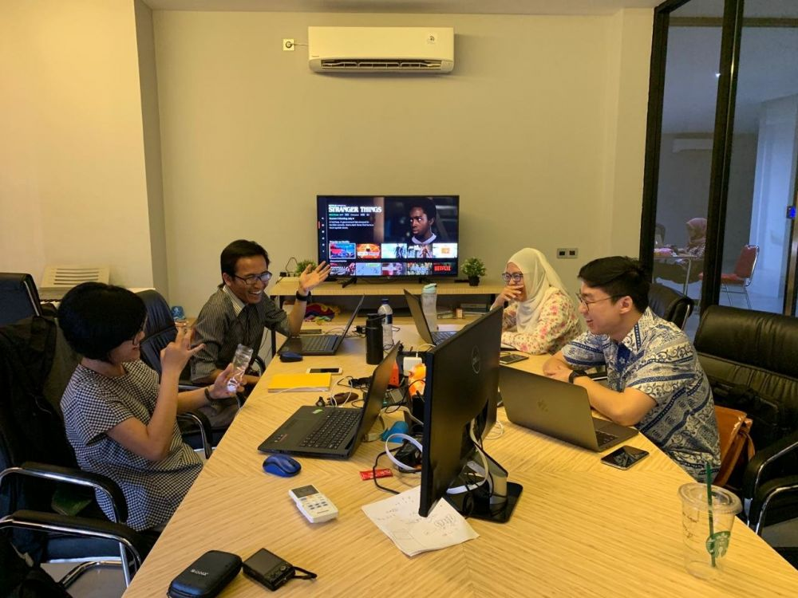
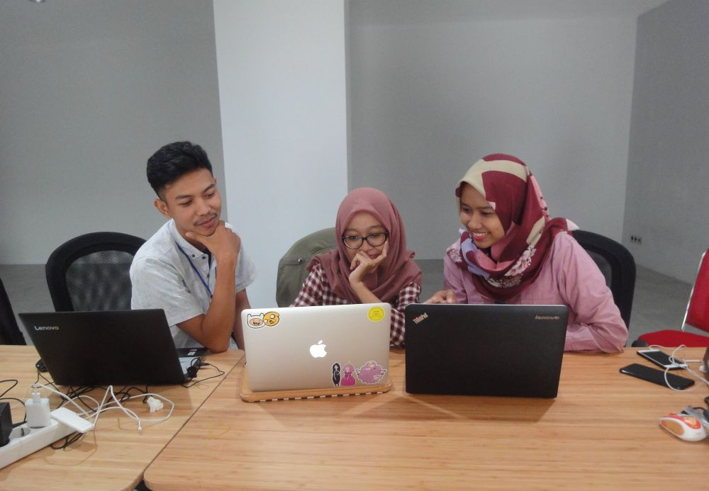
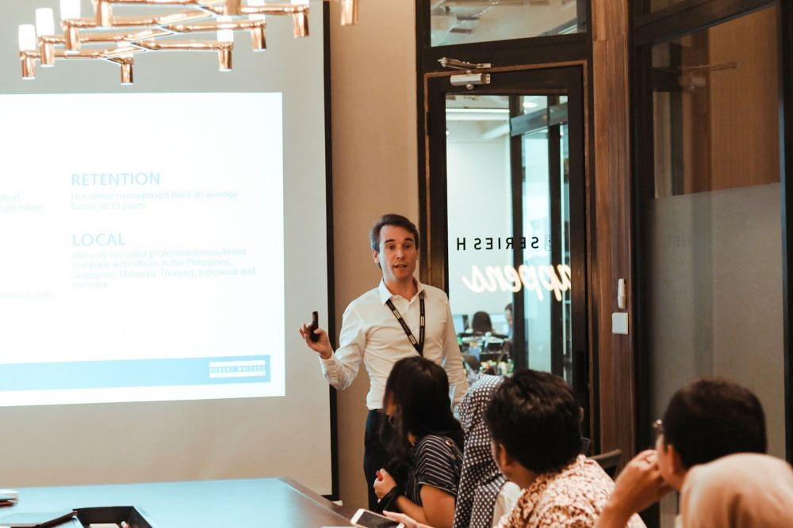

Survei Robert Walters: Krisis Talenta Teknologi Jadi Masalah Global
Talenta teknologi di Asia Tenggara masih langka

Jakarta, IDN Times - Krisis talenta teknologi menjadi permasalahan global dengan tingkat kesulitan tinggi.
Hal itu berdasarkan survei yang dilakukan pada bulan April 2019 oleh Robert Walters, kepada hampir 400 teknologi profesional dan manajer perekrutan di seluruh Asia Tenggara.
1. Sebanyak 70 persen manager merasakan dampak negatif akibat krisis talenta teknologi
Melalui survei tersebut, para manajer perekrutan talenta teknologi menilai tingkat kesulitan untuk mendapatkan talenta teknologi dengan skor rata–rata 7 dari skala 1-10. Sebanyak 68 persen responden mengaku membutuhkan waktu 3 bulan atau lebih untuk mencari seorang profesional teknologi yang dapat mengisi kekosongan dalam tim mereka.
"Tujuh puluh persen manager menyatakan telah merasakan dampak negatif yang memengaruhi produktivitas dan inovasi bisnis, karena krisis talenta teknologi," ungkap Manajer teknologi dari Robert Walters Indonesia, Antonio Mazza.
2. Talenta teknologi di Asia Tenggara masih langka
Antonio menjelaskan, pengembangan keterampilan dan kemampuan talenta teknologi saat ini belum cukup sejalan dengan kecepatan teknologi yang berkembang pesat. Hal itu menyebabkan kelangkaan talenta teknologi di Asia Tenggara, termasuk di Indonesia.
Dalam menanggapi urgensi krisis kelangkaan talenta teknologi di era digital tersebut, Robert Walters menerbitkan buku panduan teknologi "5 Kiat Dalam Menangani Krisis Talenta Teknologi".
Buku tersebut menggabungkan pandangan para pemimpin dalam dunia bisnis, pakar dalam bidang SDM, para manajer perekrutan, dan profesional teknologi tentang cara mempertahankan talenta teknologi. Dengan demikian, dapat tercipta strategi rekrutmen dan retensi yang inovatif untuk mendukung perubahan kebutuhan bisnis di era digital 4.0 yang kompetitif.
"Panduan dari Robert Walters ini memberikan wawasan tentang bagaimana perusahaan dapat mengatasi rintangan tersebut, dan dapat diaplikasikan pada semua perusahaan dalam mencari talenta potensial yang diinginkanya.
Perusahaan yang berpikiran maju yaitu perusahaan yang bergerak cepat dan berada satu langkah di depan dengan berinvestasi, melatih, dan mendukung talenta pada posisi yang lebih baik untuk mengamankan dan mempertahankan mereka," ungkapnya.
3. Kebutuhan talenta teknologi meningkat
Perkembangan startup di Indonesia menjadi pemicu bagi korporasi, untuk turut berinovasi memanfaatkan kemajuan teknologi digital dalam pengoperasian bisnis. Hal itu menyebabkan peningkatan kebutuhan talenta teknologi di semua aspek dan sektor industri.
"Dampak dari krisis talenta teknologi ini memengaruhi sumber daya dan produktivitas," katanya.